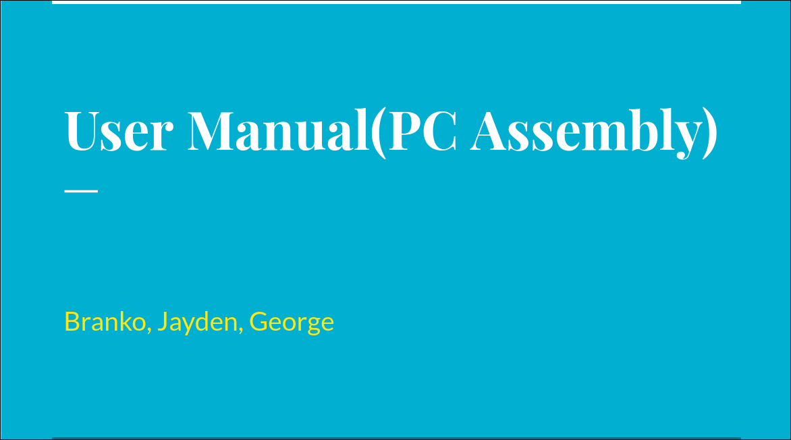

This activity was based on filling out the safety worksheets used to test our knowledge of safety. It helped me learn a lot about safety and helped me prevent hazards from happening and causing harm to others.
Unit 2 - Hardware
Main Idea
This unit revolves around the different hardware components in a computer, and eventually building a computer!
Activities

Me, Branko and George worked on a user manual designed to teach people how to disassemble and reassemble a computer. This assignment required us to record a video of us disassembling a computer with another video reassembling the computer, also including before and after pictures

In this activity, I had to go research components for a computer that had to fit a certain budget, a $900 computer and a $8000 computer. For this task, I used the website PC part picker to find my components, checking compatibility and searching for parts under my budget. Through this task, I learnt a lot about computer parts and the market for them, allowing me to start preparing for building my own.
Reflection
Overall, this unit was especially fun, not only did it allow hands-on experiences, but also allowed us to plan a built computer ourselves. With a set budget, it allows us to think of our decisions more clearly and allows us to think more realistically.